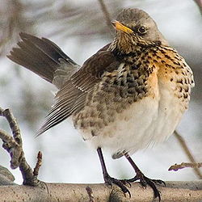
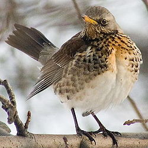

| Fieldfare | |
|---|---|
|  | |
| Conservation status | |
| Binomial name | |
| Turdus pilaris Linnaeus, 1758 |
| Fieldfare | |
|---|---|
|  | |
| Conservation status | |
| Binomial name | |
| Turdus pilaris Linnaeus, 1758 |
The Fieldfare (Turdus pilaris) is a member of the thrush family Turdidae. It breeds in woodland and scrub in northern Europe and Asia. It is strongly migratory, with many northern birds moving south during the winter. It is a very rare breeder in Great Britain and Ireland, but winters in large numbers in these countries.
It nests in trees, laying several eggs in a neat nest. Unusually for a thrush, they often nest in small colonies, possibly for protection from large crows. Migrating birds and wintering birds often form large flocks, often with Redwings.
It is omnivorous, eating a wide range of insects and earthworms in summer, and berries in winter.
The Fieldfare is 22-27 cm long, with a plain brown back, white underwings, and grey rump and rear head. The breast has a reddish wash, and the rest of the underparts are White. The breast and flanks are heavily spotted. The sexes are similar,
The male has a simple chattering song, and a chattering flight and alarm call.

{kind=link}